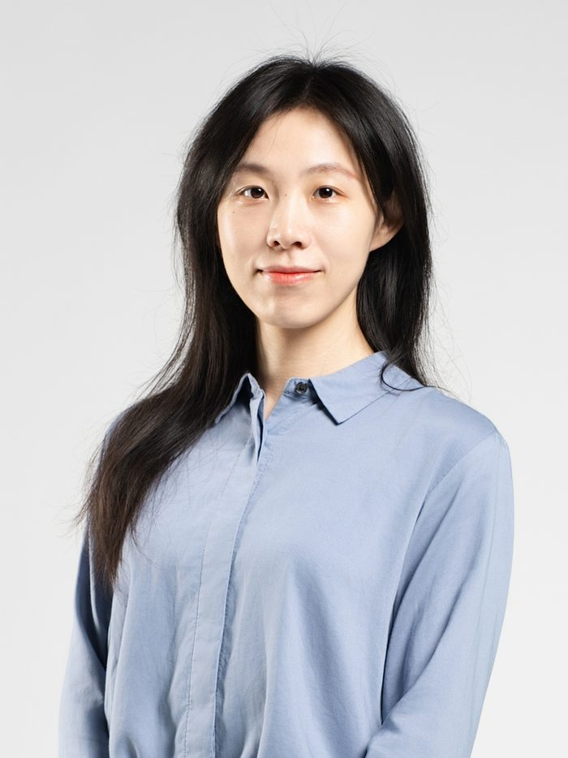
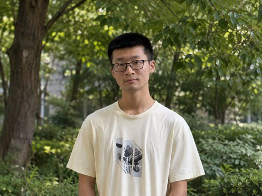
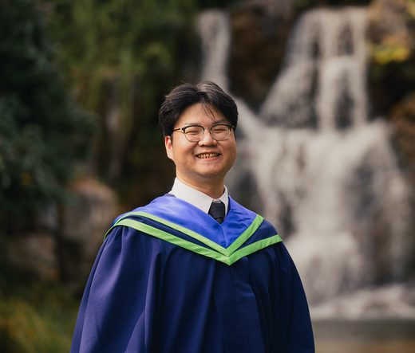
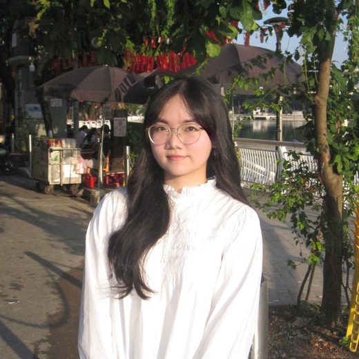
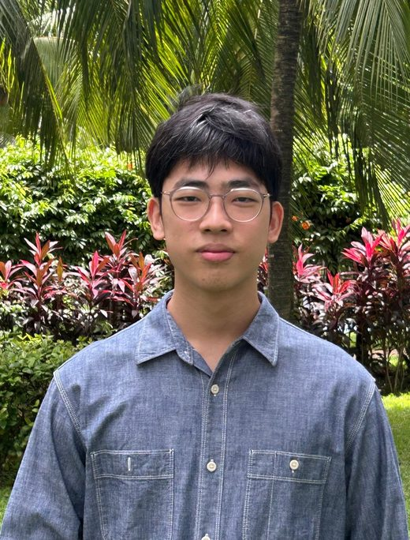
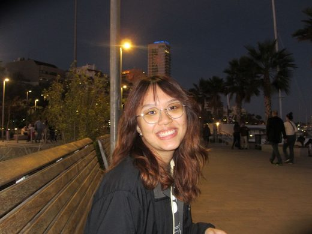

People

Principal Investigator · Assistant Professor of Chemistry · NTU Singapore
Dr. Dan He received her B.S. in Chemistry from Xiamen University and her Ph.D. in Chemical Biology from Peking University, where she worked with Prof. Peng Chen. She then conducted postdoctoral research with Prof. Christopher J. Chang at UC Berkeley under Distinguished Tang Scholarship. She joined Nanyang Technological University as an Assistant Professor in Oct 2024.
Dr. He's research sits at the interface of chemical biology, proteomics, and protein engineering. Her work has appeared in Mol. Cell, Nature, J. Am. Chem. Soc., Angew. Chem., PNAS, and other leading journals.
dan.he[at]ntu.edu.sg
Postdoctoral Researchers
We are actively looking for our first postdoc. If you are finishing a PhD in chemical biology, chemistry, biochemistry, or computational biology — or planning a fellowship application — see what we are looking for.
Graduate Students
PhD Student (2025Aug) · Chemistry
B.S., Southern University of Science and Technology

PhD Student (2025Aug) · Chemistry
B.S., Soochow University; M.Sc., NTU

PhD Student (2026Aug) · IGP, AI-for-X
B.S., Nanyang Technological University

PhD Student (2026Aug) · Biology
B.S., VNU HA NOI UNIVERSITY OF SCIENCE (HUS)
Undergraduate Students

CNY student (class of 2024)

CNY student (class of 2024)
Alumni
| Name | Role in Lab | Years |
|---|---|---|
| Jiyu Zhang | M.Sc. Student | 2025.8–2026.5 |
| Jing Fui Liew | FYP Student | 2026.1–2026.5 |
| Le Hoai Nam Phuong | FYP Student | 2026.1–2026.5 |
| Eurica Foo | FYP Student | 2026.1–2026.5 |
We are always looking for curious, motivated scientists to join us at the interface of chemistry, biology, and computation. If you are interested in joining as a postdoc, PhD student, or research staff, please reach out to Dr. He directly.
Positions & How to Apply